IDA: Driving Health Tech
As co-founder and XR architect, I took the stage at IDA's Driving Health Tech conference to demonstrate how MidwifeXR solves critical challenges on maternity wards.
Source ↗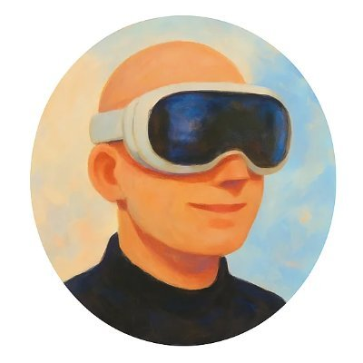
Spatial Computing Pioneer, Founder & Keynote Speaker
Copenhagen 🇩🇰/🇪🇺
I am an award-winning spatial computing developer, founder, and keynote speaker based in Copenhagen. Over a decade ago, I left my Information Science studies at the University of Copenhagen to join the first Nordic XR studio full-time. Since then, I have facilitated over 100 industry workshops, shipped high-impact immersive products, and delivered keynotes to audiences of 2,000+ people.
I have had the honor of presenting spatial computing solutions at official European Union gatherings for members of the European Parliament and Commission, as well as for United Nations delegations, demonstrating the real-world impact of immersive technology.
Over the past five years, I have engineered WebXR and immersive applications for leading global brands and cultural institutions. My software is used daily across the globe—transforming clinical workflows in hospitals, enhancing museum exhibits, and delivering seamless entertainment to users at home.
Since 2022, I have served as an Entrepreneur in Residence at the University of Copenhagen, helping shape the KU Lighthouse initiative to support students and faculty in scaling new tech startups.
In 2025, I launched NXT/WebXR. Today, it stands as one of the world's most prominent spatial computing platforms, serving as the definitive gateway for daily users worldwide to explore the spatial internet.
As co-founder and XR architect, I took the stage at IDA's Driving Health Tech conference to demonstrate how MidwifeXR solves critical challenges on maternity wards.
Source ↗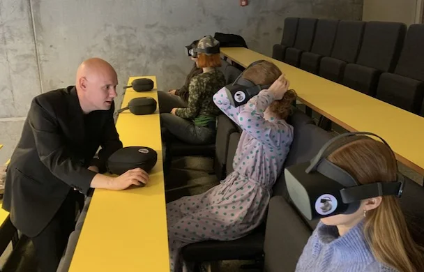
A proud moment: Midwifery students at University College Copenhagen now actively use the platform I built in their official education.
Source ↗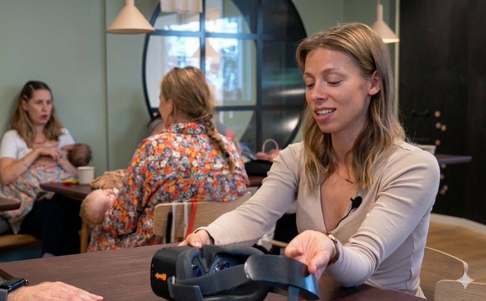
In a major interview with Berlingske, my co-founder discusses the vision behind MidwifeVR and how we use technology to tackle staff shortages.
Source ↗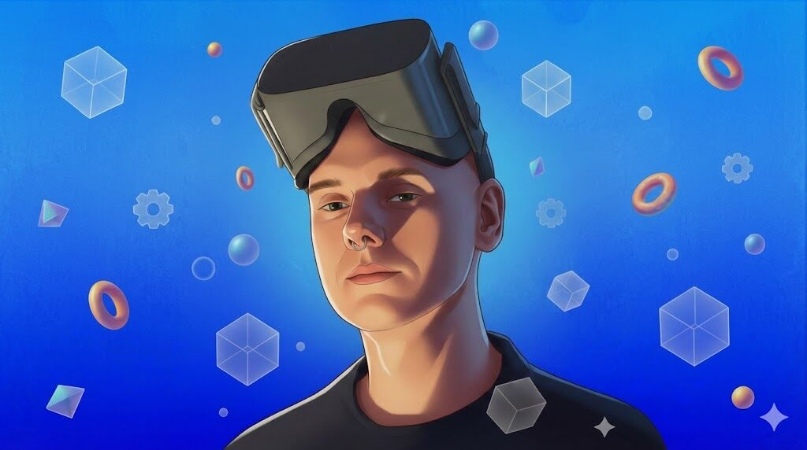
In this segment, we focus on how I collaborate with Herlev Hospital to integrate spatial computing into daily clinical life.
Source ↗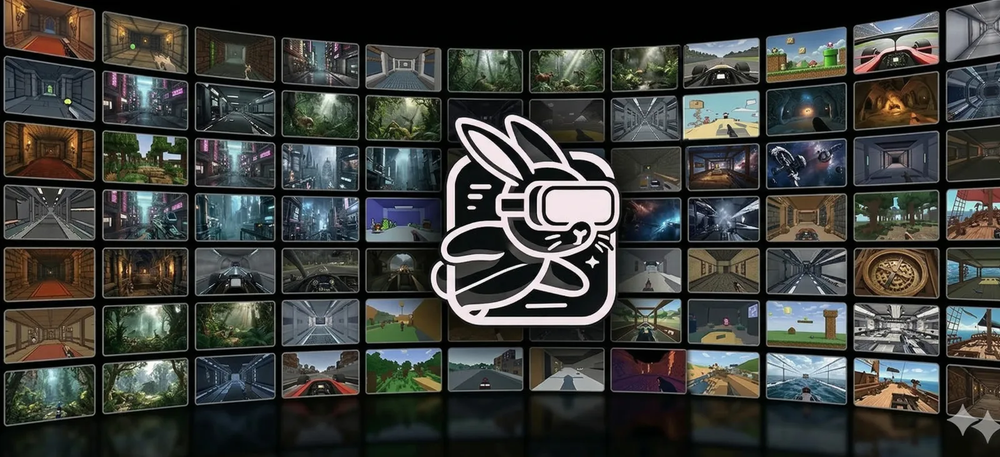
Can discovering immersive content be as seamless as browsing the web? That is the challenge I solved with NXT/WebXR.
Source ↗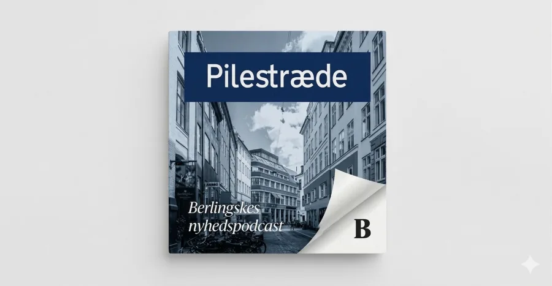
I was invited into the studio at Berlingske to give my expert opinion on Apple's massive entry into spatial computing.
Source ↗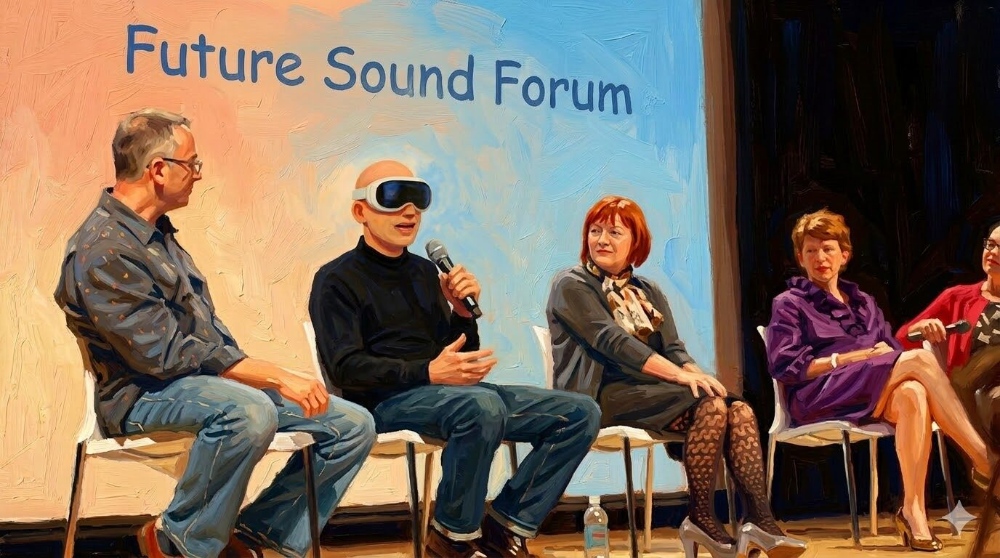
Invited as a panelist to share my knowledge about spatial computing together with representatives from Bang & Olufsen.
Source ↗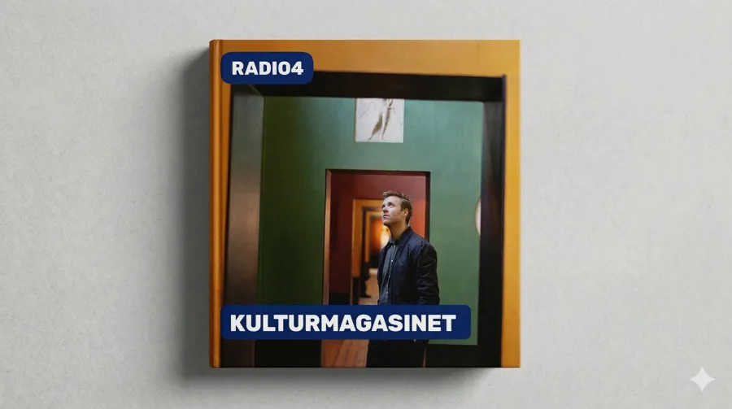
Together with Christiane Vejlø, I visited Radio4 to analyze the impact spatial computing will have on the cultural industry.
Source ↗The App Store model is broken for immersive tech. The open web offers the only scalable, permissionless distribution channel.
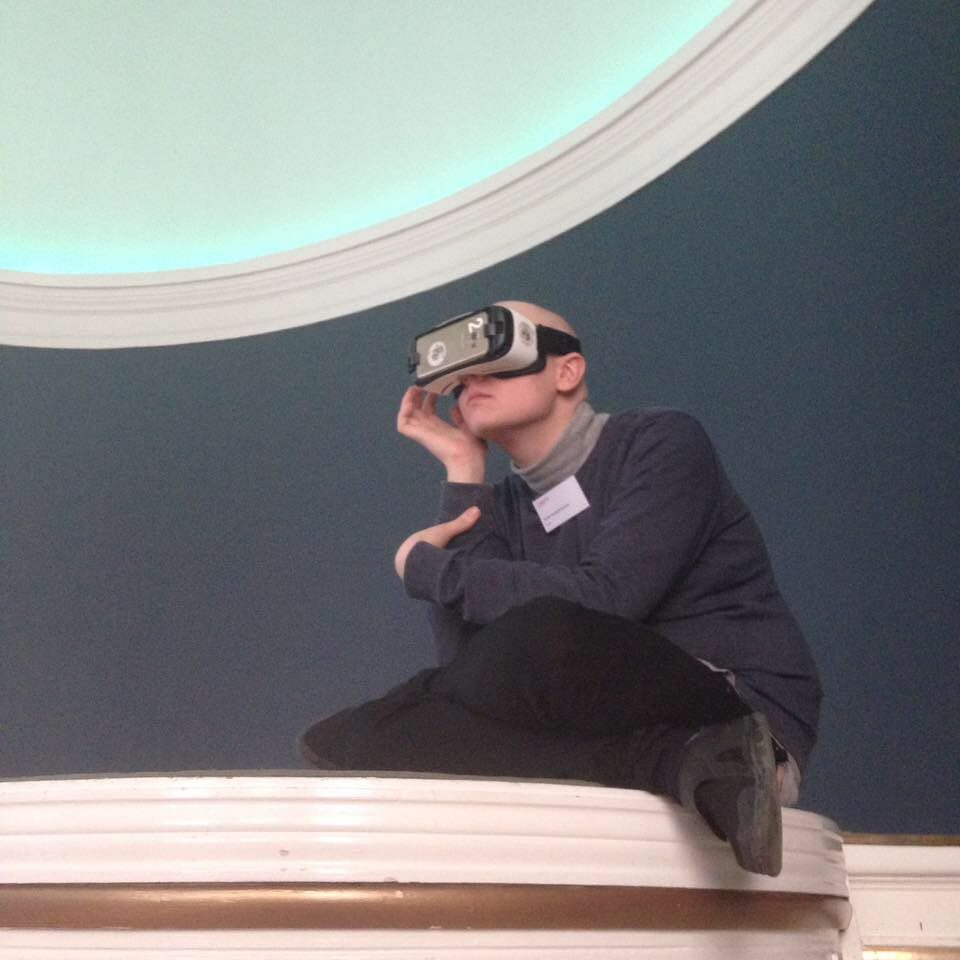
A look into the archive: Back in 2018, deeply concentrated on setting up a Samsung Gear VR.
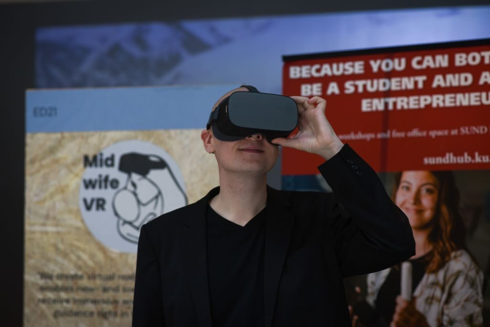
"I met a recently graduated midwife who was on the brink of tears... That's how I decided to build MidwifeVR." Interview with CBS Wire.
Source ↗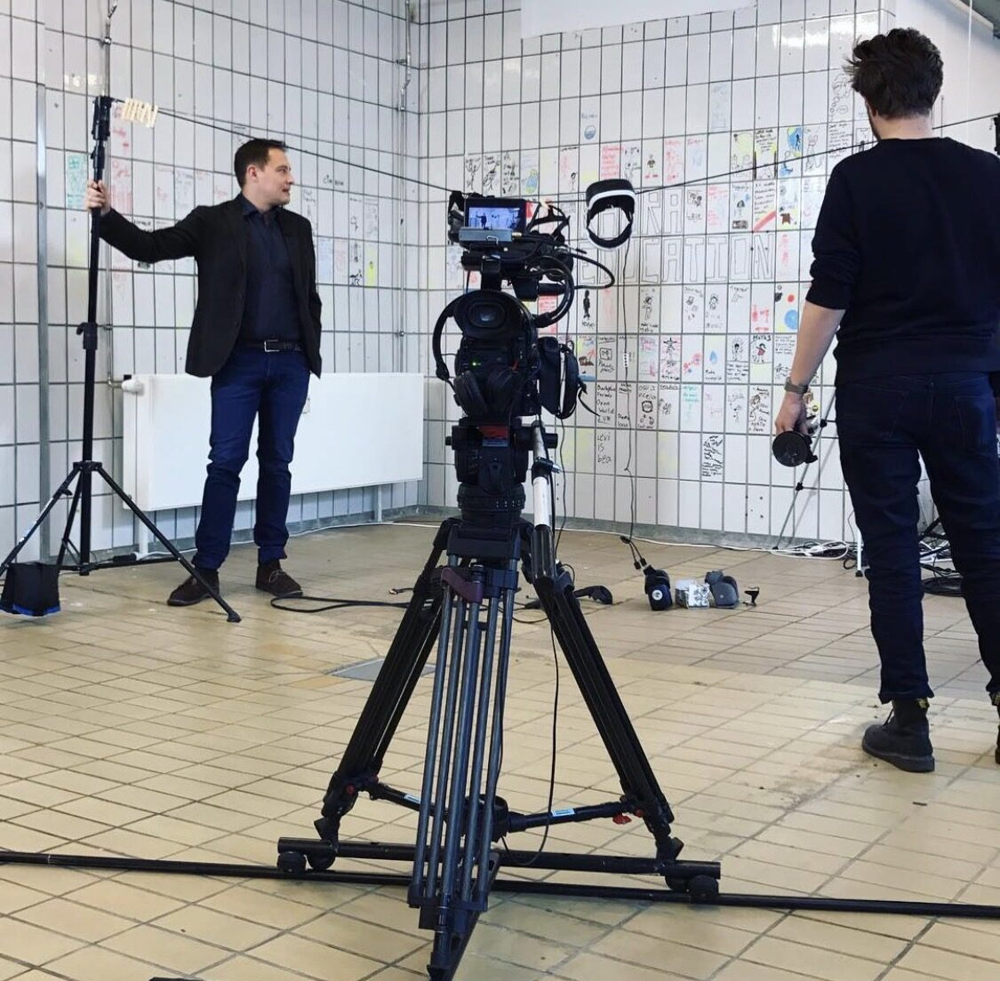
Behind the scenes at DR2, demonstrating future technology for tech host Nikolaj Sonne.
I built SendToQuest to save users hours of frustration. Instantly open WebXR on multiple headsets simultaneously.
Source ↗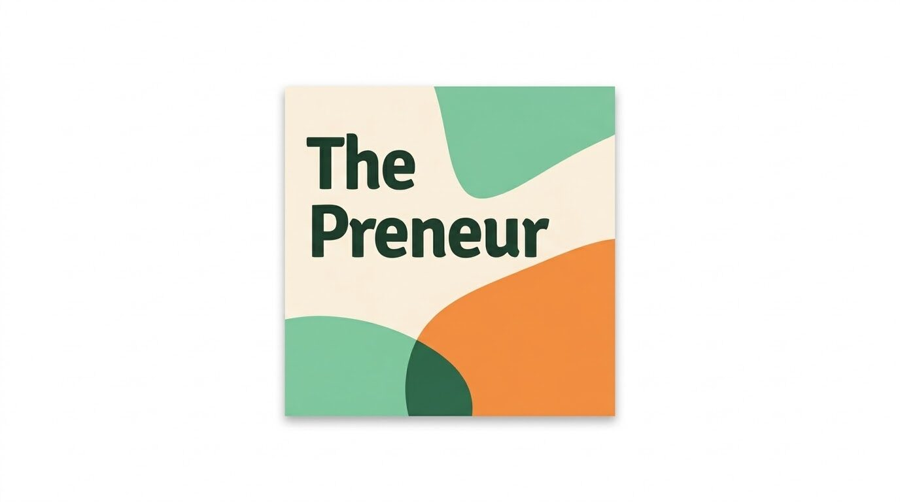
As a guest on Thepreneur Podcast, I share my journey as a tech founder and XR developer.
Source ↗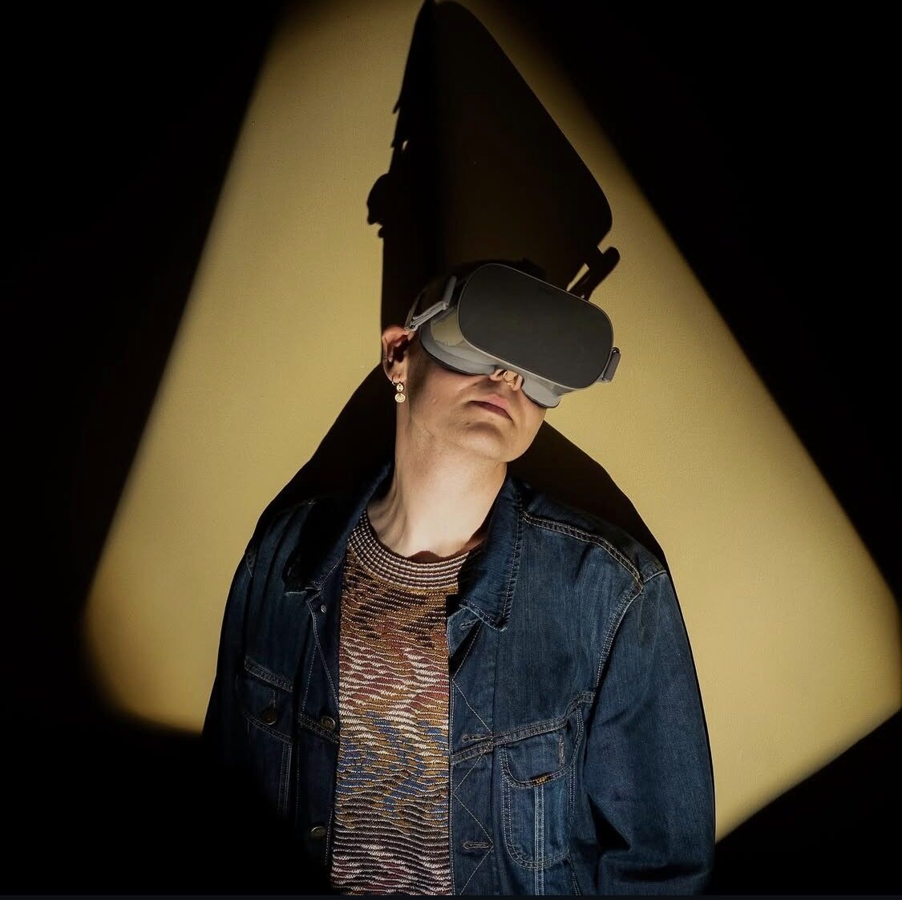
From a photo series in the art magazine Tofu about technology's entry into contemporary art.
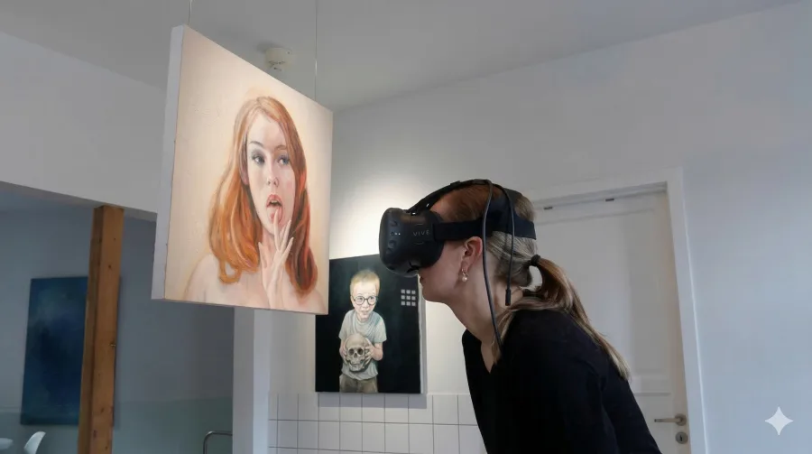
In 2017, The Copenhagen Post caught up with me to discuss my vision for immersive technology as 'the final frontier'.
Source ↗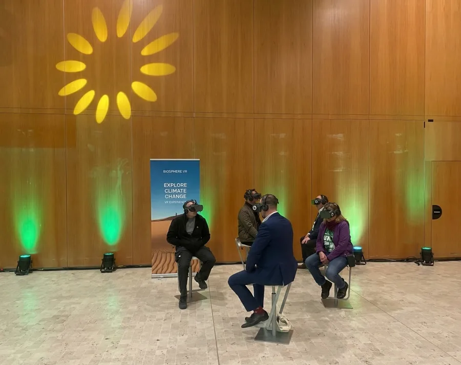
Demonstration of newly developed immersive experiences for the European Greens directly in the European Parliament.
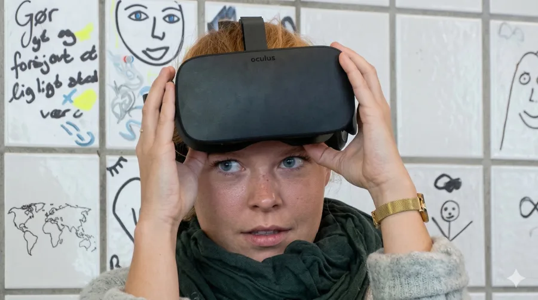
Already in 2016, the international media Voice of America stopped by to cover my work building immersive spaces.
Source ↗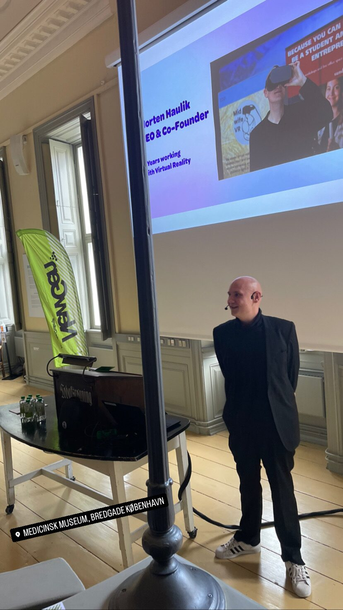
Exclusive tech presentation at the historical Medical Museion in Copenhagen for Eli Lilly's NewGen event.
As Lead Developer and VR Consultant, I created a fully immersive experience for top restaurants.
Source ↗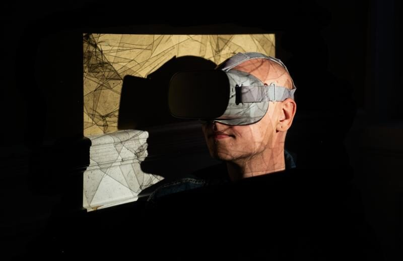
Another picture from Tofu's aesthetic photo series on the intersection of technology and art.